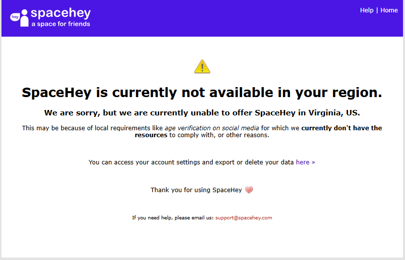
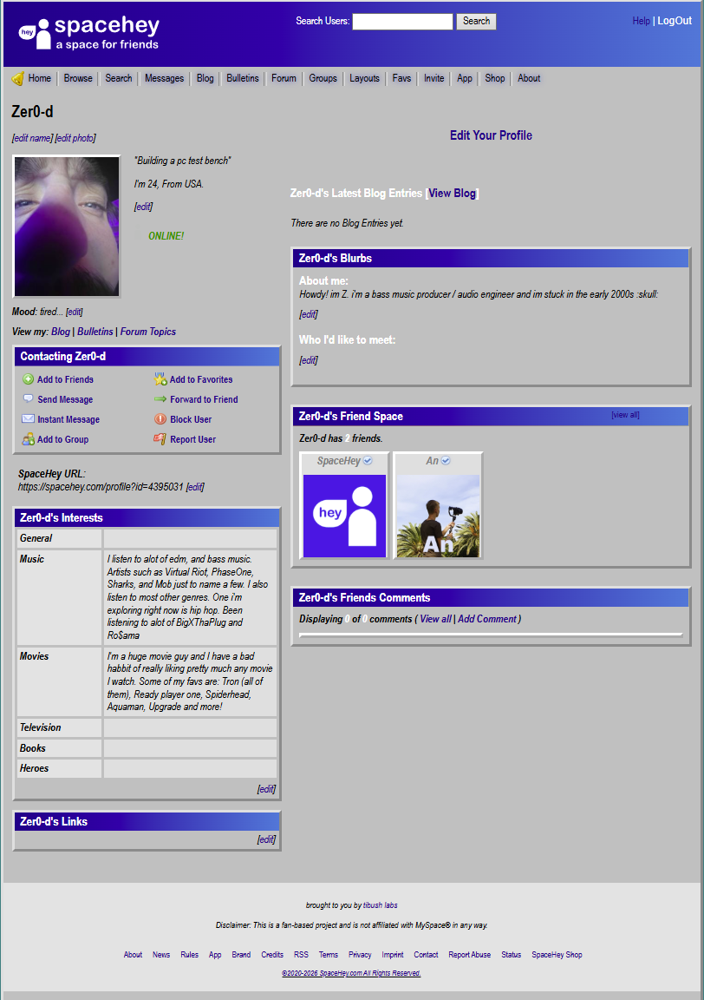

Exploring SpaceHey
01/03/2026 – SpaceHey: A Space for Friends
Today, while browsing YouTube, I came across a website called SpaceHey – a space for friends. It’s a nostalgic throwback, which seems to be a direct clone of the old MySpace. Now, I wasn't old enough back then to experience MySpace myself, but as someone who’s weirdly obsessed with early 2000s nostalgia, I was sucked right in. If you remember MySpace, drop a comment and let me know what you recall or what feels different on SpaceHey! Check out this video: Watch on YouTube

Creating my profile...
So without further ado, I jumped right in to create my account… and then hit a wall. Apparently, the state of Virginia now requires social media platforms to verify user ages. Since SpaceHey currently doesn’t handle this, they restrict access from Virginia. BUT that isn’t going to stop me!
Getting around geoblocking
So because spacehey is restricted in Virginia, i'm going to have to use a VPN to get around that. Luckily Opera browser has one built in. The only server that worked was Europe. So i guess connect from Europe and youre good to go
This is my profile. I found code in their layouts section that someone had posted, that made it look like windows 98. which i thought was awesome so i used that. 
← Back to Home